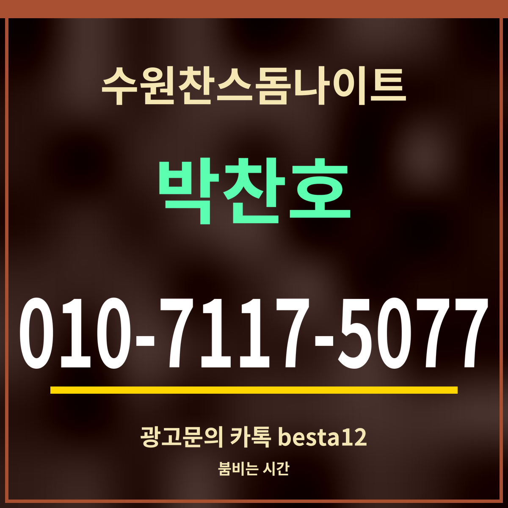

광고19세 미만 출입 금지
수원찬스돔나이트 언제 붐빌까, 토요일 밤 10시가 가장 높다
지표 출처: 카카오맵 시간대별 방문 지표(2026-09-27 갱신) — 사람 수가 아닌 견주기용 값

핵심 3줄: 한 주 평균으로 보면 밤 10시(7,408)가 가장 높습니다. 한 주 전체에서 가장 높은 칸은 토요일 밤 10시(14,717)입니다. 문을 막 연 저녁 8시는 평균 3,065로 밤 10시의 절반에 못 미칩니다.
시간대별 방문 지표
| 시각 | 한 주 평균 | 토요일 |
|---|---|---|
| 20시 | 3,065 | 4,757 |
| 21시 | 5,426 | 9,883 |
| 22시 | 7,408 | 14,717 |
| 23시 | 6,094 | 12,014 |
| 0시 | 4,652 | 7,990 |
| 1시 | 3,118 | 6,028 |
| 2시 | 2,024 | 3,814 |
| 3시 | 1,219 | 2,347 |
| 4시 | 717 | 1,264 |
숫자를 읽는 법
저녁 8시부터 밤 10시까지 빠르게 올라가고, 자정을 넘기면 조금씩 줄어듭니다. 새벽 4시 평균은 717로 밤 10시의 10분의 1 아래입니다. 토요일은 밤 10시가 14,717로 평균의 두 배 가까이 됩니다.
여유 있게 자리를 잡고 싶다면 8~9시에, 가장 활기찬 때를 원한다면 10시 전후에 가는 편이 지표와 맞습니다. 요일 차이도 큽니다. 월요일 밤 10시는 3,347로 금요일 밤 10시(12,710)의 4분의 1 수준입니다. 지표는 평균적인 흐름이라 그날 사정은 다를 수 있습니다. 수원찬스돔나이트 자리 문의는 담당에게 전화로 하면 됩니다.
자주 묻는 것
가장 붐비는 시간은요? — 한 주 평균으로 밤 10시가 가장 높고, 토요일 밤 10시(14,717)가 한 주 최고입니다.
한산한 시간은요? — 문을 막 연 저녁 8시(평균 3,065)와 새벽 3~4시가 낮습니다.
지표는 사람 수인가요? — 아닙니다. 카카오맵이 보여 주는 상대 지표라 시간대끼리 견주는 데만 씁니다.
한 줄 정리: 수원찬스돔나이트는 밤 10시가 정점, 토요일 밤 10시가 한 주 최고입니다.
영업시간은 매일 20시~05시에 있습니다.
이 페이지는 광고이며, 업소 제공 정보를 받아 실었습니다(담당 박찬호). 확인일 2026-09-27.